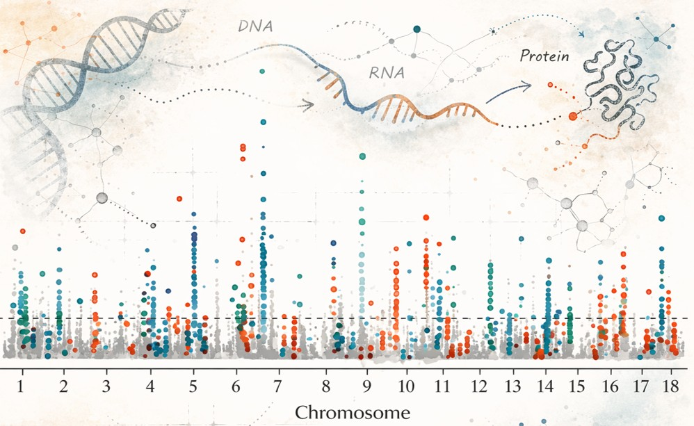
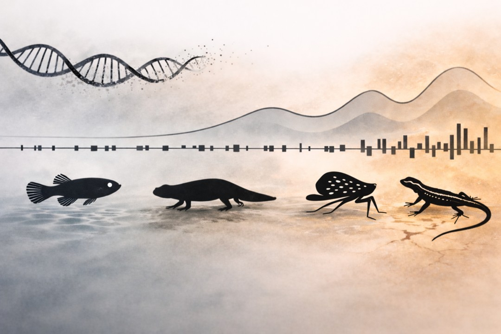
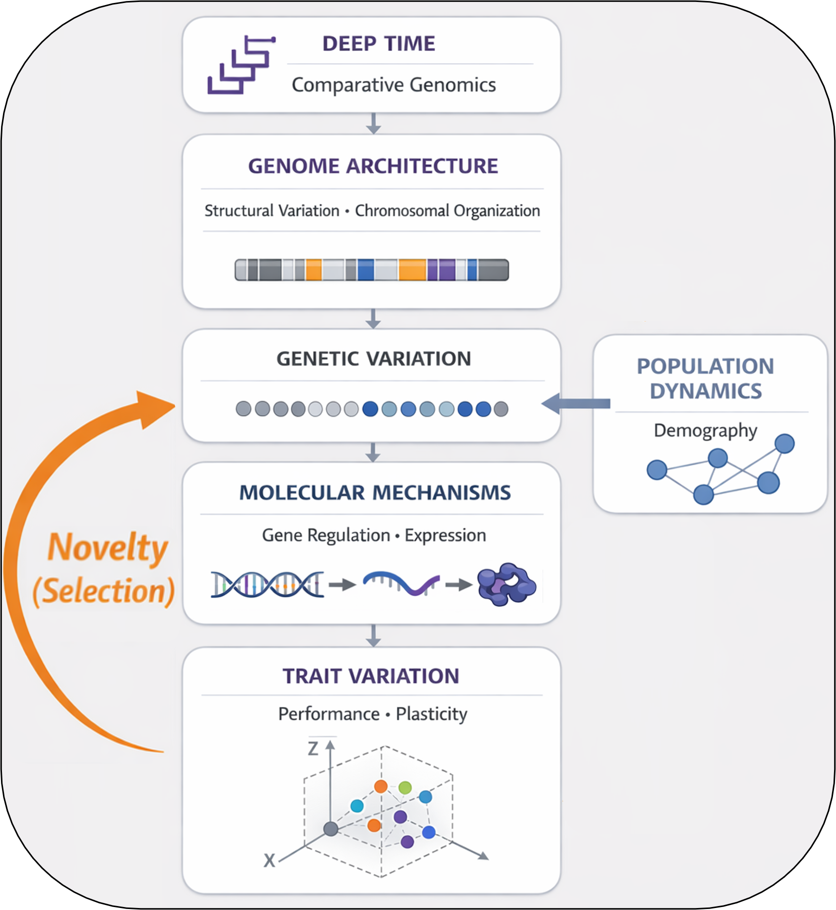
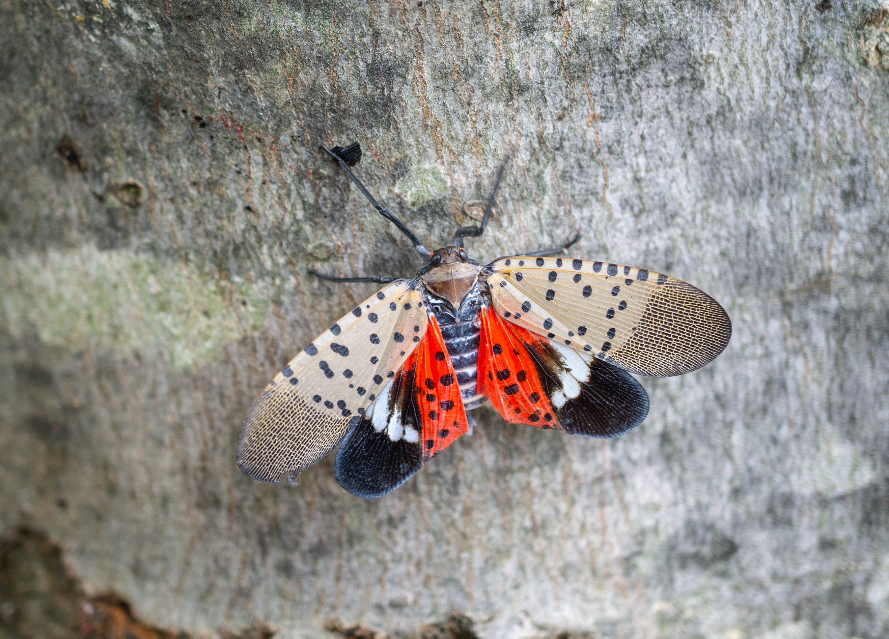

Research
The Genomics of Biological Responses to Novelty
Structural Genome Evolution
Genomes vary dramatically in size, repeat composition, and chromosomal organization across the tree of life. I investigate how these architectural differences, along with patterns of molecular evolution and gene family diversification, are associated with evolutionary transitions in traits across lineages. By integrating chromosome-scale assemblies with phylogenetic comparative frameworks, I test whether variation in genome structure and sequence evolution corresponds with repeated patterns of phenotypic diversification.
In this view, genome evolution is not simply descriptive; it provides insight into how structural and sequence-level change may bias or constrain the evolutionary trajectories available to clades over time.

Genome-to-Phenome Mechanisms
Connecting genomic variation to phenotypic diversity remains a central challenge in evolutionary biology. I investigate how different forms of genetic variation—including both sequence-level differences and structural genomic changes—contribute to trait diversity in natural populations. Rather than isolating a single class of mutations, I examine how multiple layers of genomic variation influence gene expression, regulatory architecture, and physiological performance.
By integrating population genomic analyses with functional and expression-based approaches, this work clarifies how genome-level variation shapes the evolutionary dynamics of complex traits.

Evolution in Natural Systems
Evolutionary responses to environmental novelty emerge from interactions between selective pressures, demographic processes, and the genomic architecture of traits. I study how forces such as selection, gene flow, and drift shape patterns of genomic variation in populations experiencing rapid environmental change, and how these dynamics unfold through time. By examining how the underlying genetic architecture of traits interacts with evolutionary forces across demographic histories, I evaluate why adaptive responses are repeatable in some contexts but lineage-specific in others.
This work uses natural systems as evolutionary laboratories to assess how genomic structure, population history, and temporal dynamics together influence adaptive trajectories.
Integrative Framework
My research is organized around a cross-scale comparative framework linking genome evolution, molecular function, and population-level dynamics.
Changes in genome architecture shape the distribution and types of genetic variation available within lineages. This standing genetic variation influences regulatory processes and patterns of trait expression, generating the molecular and physiological diversity on which selection acts. Evolutionary forces—including selection, drift, and gene flow—then act on this trait variation as populations encounter environmental novelty, filtering and reshaping genetic architectures through time.
Across macroevolutionary divergence and contemporary environmental change, these interactions structure how biological systems respond to new conditions. By examining these processes together, I seek to uncover general genomic principles governing evolutionary responses to novelty.

Study Systems
I deliberately work across diverse natural systems to test how genomic architecture shapes evolutionary responses under contrasting demographic and environmental conditions. Together, these complementary systems provide the comparative leverage needed to uncover general principles linking genetic variation to trait evolution.

New World Mangrove Fishes
New World mangrove fishes inhabit highly dynamic coastal environments shaped by salinity gradients, pollution, habitat fragmentation, and fluctuating abiotic conditions. In these systems, I investigate how standing genetic variation and regulatory responses contribute to trait expression across heterogeneous and anthropogenically impacted landscapes. Because these species are readily bred and experimentally tractable in the laboratory, they provide a rare opportunity to link genomic variation to ecologically relevant phenotypes under controlled conditions. This combination of environmental realism and experimental accessibility makes mangrove fishes powerful models for examining how genomic architecture shapes evolutionary responses through time.

Amphibians
Amphibians, particularly salamanders, represent lineages with some of the largest and most structurally complex genomes among vertebrates. These extreme genomic architectures provide a powerful context in which to investigate how repeat landscapes, chromosomal organization, and molecular evolutionary dynamics intersect with trait diversification. By integrating phylogenomic analyses across clades with population-level genomic inference, I examine how genome structure influences the distribution of genetic variation and the evolutionary trajectories of traits. These systems allow me to test how large-scale genomic architecture shapes the substrate available for adaptation across deep and shallow evolutionary timescales.

Invasive Species
Invasive species undergo rapid demographic shifts and environmental transitions during range expansion, creating powerful contexts for studying evolutionary change. In systems such as the spotted lanternfly (Lycorma delicatula) and the Italian wall lizard (Podarcis siculus), I investigate how genomic variation contributes to adaptation as populations establish in novel environments. These populations allow me to examine how founder effects, gene flow, and selection interact with genomic architecture to shape evolutionary responses on short timescales. By comparing distantly related invasive lineages, I assess how similar evolutionary forces operate across contrasting genomic backgrounds.